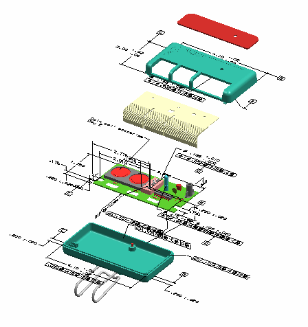

除了直接在装配部件中创建 PMI 对象外，您也可以使用装配过滤器以在您的装配部件内显示组件级的 PMI。
PMI 装配过滤器：
让您控制在装配的模型视图中，哪个装配级别的 PMI 对象为可见。
只能应用于组件 PMI，而不能应用于在装配部件中定义的 PMI。
只能在装配部件中创建与保存
创建的组件 PMI 显示实例不能被下游应用模块重用，如果您需要在装配中创建组件级 PMI 的关联副本，您就必须创建 WAVE 链接的 PMI。
一旦创建了 PMI 装配过滤器，您就可以将该过滤器应用于装配中的任意模型视图。PMI 装配过滤器应用于模型视图时，它也可以应用到使用该模型视图创建的 PMI 剖视图或 PMI 轻量级剖视图中。
|

|
您可要使用下列命令来创建 PMI 装配过滤器，这些命令在您右击 PMI 装配过滤器文件夹并选择添加过滤器时可用。
根据 PMI 类型 – 让您创建一个多个特定 PMI 类型的过滤器
根据模型视图名称 – 让您根据包含在组件部件中的模型视图名称来创建过滤器
显示全部 – 让您创建一个显示组件部件中全部 PMI 对象的过滤器
|
应用模块 |
PMI |
|
先决条件 |
您必须在使用装配部件 |
|
部件导航器中的位置 |
模型视图→右击 PMI 装配过滤器→添加过滤器→根据 PMI 类型 模型视图→右击 PMI 装配过滤器→添加过滤器→根据模型视图名称 模型视图→右击 PMI 装配过滤器→添加过滤器→显示全部 |